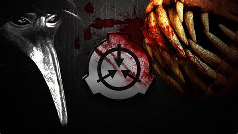

Once upon a time, in a small town surrounded by mist-shrouded forests, there stood a mysterious facility known as the Secure Containment Procedures Foundation, or SCP for short. Rumors and whispers filled the air about the strange and dangerous anomalies housed within its walls. People spoke in hushed tones, wondering what secrets lay hidden inside. Lucky, today! You had been invite from SCP Foundation lab to visit what they have! You will write a report to show the world SCP Foundation is improve the human society.
Go to level 1 in this building
Go to level 2 in this building
